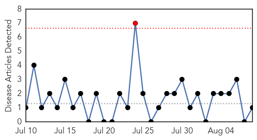
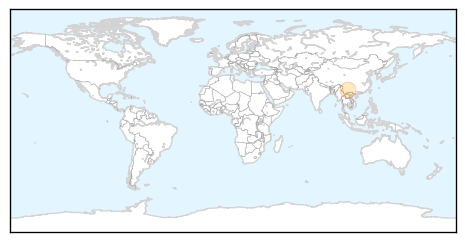

Unknown
30-Day Web Trend
0 alerts, 5 warnings
30-Day Twitter Trend
5 alerts, 1 warnings
Article Locations
Article Confidences
Top Articles:
- 0.967
- Atlanta confronts tuberculosis outbreak in homeless shelters
- 0.917
- Chicago Tribune
- 0.917
- Chicago Tribune
- 0.917
- Chicago Tribune
- 0.917
- Chicago Tribune
- 0.910
- The world windows to Thailand
- 0.910
- The world windows to Thailand
- 0.903
- 6 Japanese Encephalitis cases detected in Nagaland
- 0.866
- A boogie boarder catches a wave at Sandy beach on the east side of Oahu as Tropical Storm Iselle passes through the Hawaiian islands, in Honolulu, Hawaii
- 0.866
- Vice President Biden pledges U.S. support to Iraqi president
- 0.866
- Smokey Bear is pictured in a 2011 US Forest Service poster in this undated handout photo
- 0.866
- ArcelorMittal says Ebola triggers force majeure at Liberia mine
- 0.866
- Turkish Airlines says cancels flights to Arbil due to security concerns
- 0.866
- Iraq's Sistani increases pressure on Maliki to step aside
- 0.866
- Turkish trucks en route to northern Iraq can go via Iran
- 0.866
- Kurdish oil pipeline via Turkey operating normally despite militant advance
- 0.866
- Explosion rocks Gaza, smoke seen after apparent Israeli air strike-witness
- 0.866
- South Africa national airline to continue operating in W.Africa
- 0.866
- Two Gaza rockets land in Israel overnight, army says, Hamas denies firing
- 0.866
- No deal in Gaza talks in final hr, Palestinians could reject -source
- 0.857
- Whole genome sequencing in Salmonella Newport outbreak
- 0.766
- The most from the coast
- 0.752
- Cuba's Health Care System: a Model for the World
- 0.737
- In het Noorden: de heropleving van de Sami-cultuur
- 0.735
- Clinton, Utah authorities warn residents of possible E. coli contamination of water supply
- 0.735
- Health Department: Dangers of bacteria in local waters exaggerated - Fortmyersbeachtalk.com
- 0.725
- More African Swine Fever in Lithuanian Swine
- 0.700
- Africa’s next big health challenge: non-communicable diseases
- 0.699
- Haiti reports anthrax outbreak in Petit-Goâve town
- 0.670
- Bar on random JE tests to avoid kit wastage
- 0.666
- The most from the coast
- 0.665
- Beet western growing threat
- 0.638
- Ga. plant waited to disclose salmonella
- 0.617
- North Carolina Residents Advised to Remain Away from Discolored Water
- 0.597
- Erlanger Affiliate Celebrates National Health Centers Week
- 0.596
- Soligenix's anthrax vaccine, VeloThrax demonstrates promising results
- 0.584
- A need to harness demand for universal health coverage
- 0.582
- Rectal probes improperly disinfected since 2009, warns N.S. health authority
- 0.557
- UN chief voices deep concern over humanitarian situation in eastern Ukraine - Xinhua
- 0.554
- UN chief voices deep concern over humanitarian situation in eastern Ukraine
- 0.546
- 272 encephalitis deaths this year in Assam
- 0.515
- Zim hospital has to beg for donor cash
- 0.503
- Leading dentist says anti-fluoride beliefs were ludicrous
Top Tweets:
- 0.669
- Un inglés murió por la explosión de su cigarrillo electrónico: Un hombre murió en Inglaterra en un incendio ... http://t.co/yhisyG577E
- 0.660
- RT: El Ministro de Salud sigue en su recorrido por las diferentes áreas del Hospital Sergio Núñez Núñez de Ocú Panamá http:…
Meningitis
30-Day Web Trend
1 alerts, 0 warnings

30-Day Twitter Trend
1 alerts, 0 warnings

Article Locations
Article Confidences

Top Articles:
Top Tweets:
-
No tweets found for Aug 08, 2014